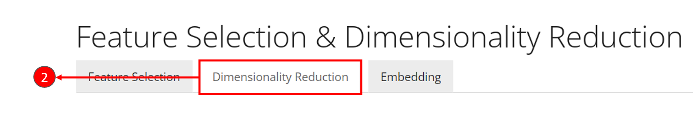
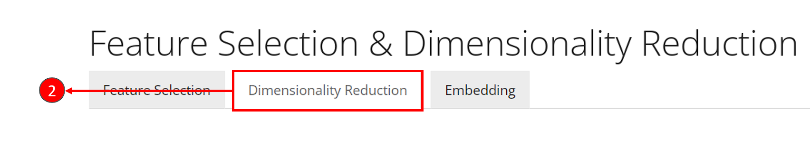
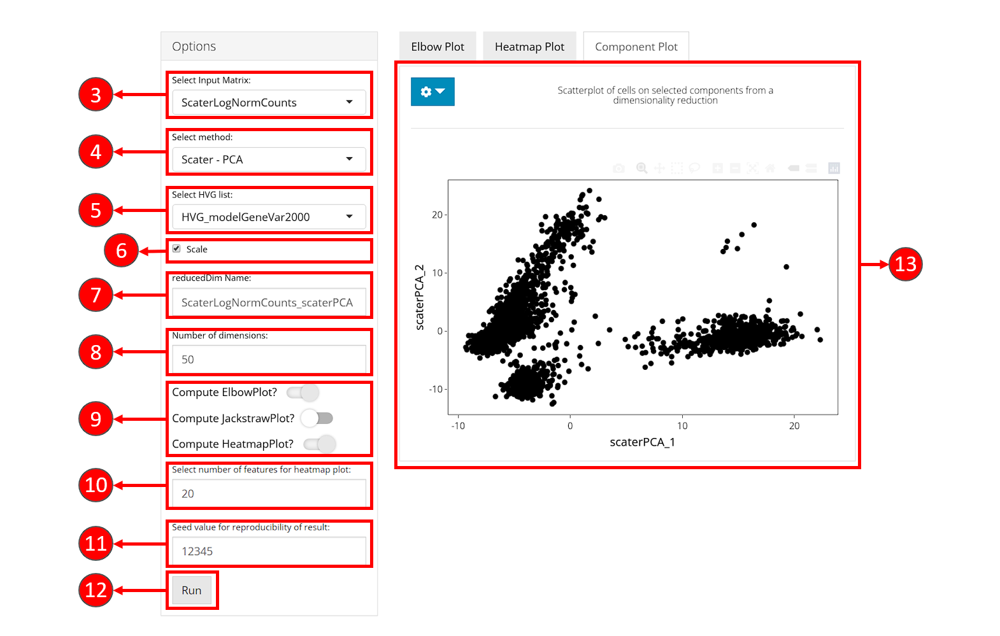
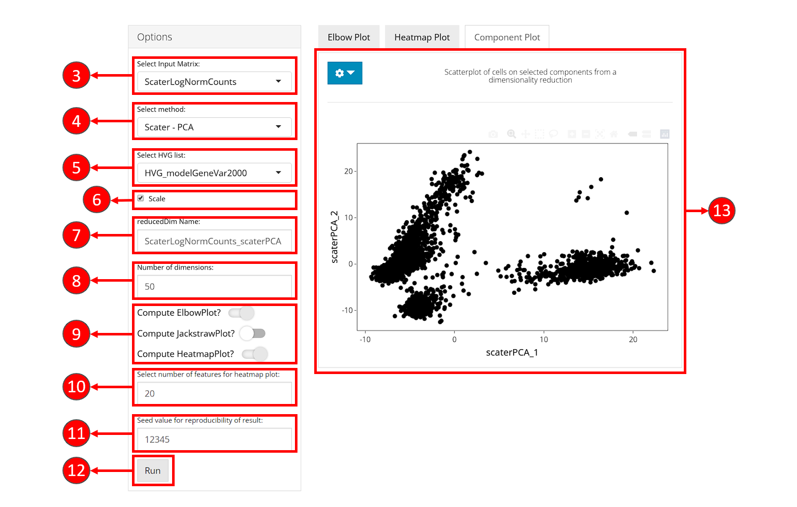
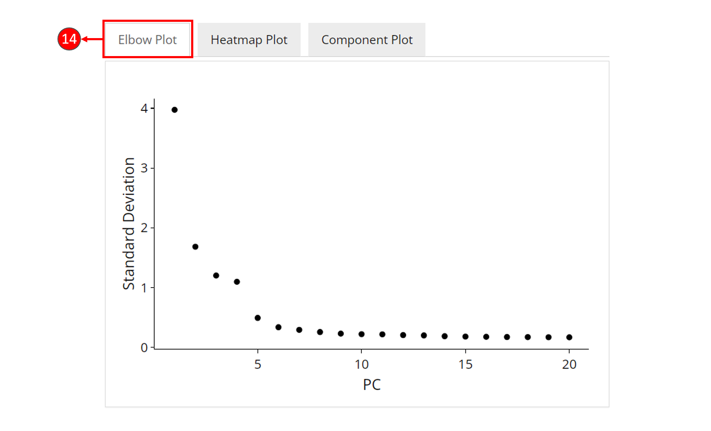
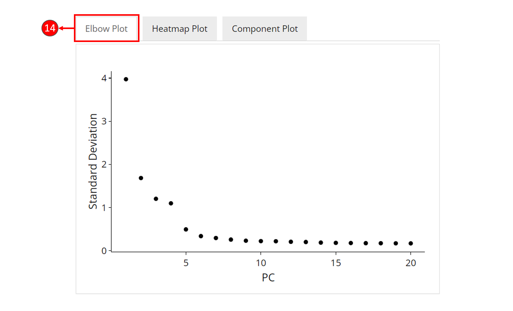

Dimensionality Reduction
Irzam Sarfraz
Source:vignettes/ui_dimensionality_reduction.Rmd
ui_dimensionality_reduction.RmdIntroduction
Dimensionality Reduction tab offers a convenient way to run and visualize dimensionality reduction algorithms i.e., PCA & ICA, that have been implemented from various packages and integrated together in a single interface. Additionally, high-dimensional data visualization methods such as tSNE & UMAP have also been provided under the umbrella of dimensionality reduction in a separate sub-tab. The dimensionality reduction tab in divided into two separate sub-tabs, one for PCA/ICA and the other one for tSNE/UMAP, both of which offer customization options and separate visualizations.
A brief summary of the two tabs is described below:
PCA/ICA
Implemented Algorithms from Packages:
| reducedDims Method | Packages | Reference |
|---|---|---|
| PCA | Scran | Lun ATL, McCarthy DJ, Marioni JC (2016). “A step-by-step workflow for low-level analysis of single-cell RNA-seq data with Bioconductor.” F1000Res., 5, 2122. |
| PCA | Seurat | Butler et al., Nature Biotechnology 2018 & Stuart, Butler, et al., Cell 2019 |
| ICA | Seurat | Butler et al., Nature Biotechnology 2018 & Stuart, Butler, et al., Cell 2019 |
tSNE/UMAP
Implemented Algorithms from Packages:
| Method | Packages | Reference |
|---|---|---|
| tSNE | ? | ? |
| UMAP | ? | ? |
| tSNE | Seurat | Butler et al., Nature Biotechnology 2018 & Stuart, Butler, et al., Cell 2019 |
| UMAP | Seurat | Butler et al., Nature Biotechnology 2018 & Stuart, Butler, et al., Cell 2019 |
Workflow Guide
In general, both sub-tabs offer options for selection of data items and choice of parameters on the left side, and a visualization panel on the right side of the interface. A detailed workflow guide to run and visualize dimensionality reduction (DR) algorithms is described below:
 1. To begin the DR workflow, click on the “Feature Selection & Dimensionality Reduction” tab from the top menu. This workflow assumes that before proceeding towards computation of DR, data has been uploaded, filtered and normalized (and optionally variable features have been identified) through the preceding tabs.  2. Select “Dimensionality Reduction” tab.
1. To begin the DR workflow, click on the “Feature Selection & Dimensionality Reduction” tab from the top menu. This workflow assumes that before proceeding towards computation of DR, data has been uploaded, filtered and normalized (and optionally variable features have been identified) through the preceding tabs.  2. Select “Dimensionality Reduction” tab.  3. Select “PCA/ICA” or “tSNE/UMAP” appropriately.  4. Select a data item (assay or a feature subset) which should be used for computation.
3. Select “PCA/ICA” or “tSNE/UMAP” appropriately.  4. Select a data item (assay or a feature subset) which should be used for computation.
5. Select an appropriate method for dimensionality reduction. Available choices are “PCA” from package and “PCA” & “ICA” from package.
6. Specify a name for the new data (reducedDim).
7. Specify the number of dimensions to compute against the selected algorithm. Default value is .
8. Check the boxes against the visualizations that should be plotted after computation of reducedDims. This visualizations become available after computation on the right panel.
9. If “Compute HeatmapPlot?” is selected in step 8, you can specify how many features should be plotted in the heatmap by default. This setting can be changed later as well from the visualization panel on the right.
10. Press “Run” to start computation.
11. Once processing is complete, selected visualizations appear in this panel.  12. A 2D plot between the top two components is computed for all methods.  13. Elbow plot (optional) can be computed against PCA methods. It shows a relationship between the increasing number of components and the standard deviation, where components before an elbow break should be selected for downstream analysis.
12. A 2D plot between the top two components is computed for all methods.  13. Elbow plot (optional) can be computed against PCA methods. It shows a relationship between the increasing number of components and the standard deviation, where components before an elbow break should be selected for downstream analysis. 
- Heatmap plot panel can be used to visualize the features against each of the computed component.
- Customizations for the heatmap plot can be made by selecting the components that should be selected. Number of columns for visualization can be specified as well for better viewing experience.

- Jackstraw plot can be computed with PCA methods.

- To compute tSNE or UMAP, select the “tSNE/UMAP” sub-tab from the interface. The steps below are only concerned with the computation of tSNE or UMAP and may vary between both of these methods.
- Select a data item (assay or feature subset) to use for tSNE/UMAP computation.
- Select method for tSNE or UMAP computation.
- Specify the name of the new reducedDim.
- Specify the number of components to compute with the selected method. Default value is set to .
- Specify number of iterations. Default value is set to .
- Set perplexity parameter for tSNE. Default value is set to code{5}.
- Start processing of the selected method.
- Once computation is complete, a 2D plot between the components can be visualized in this panel.
Note: Some parameters may differ between different methods and may not have shown here.